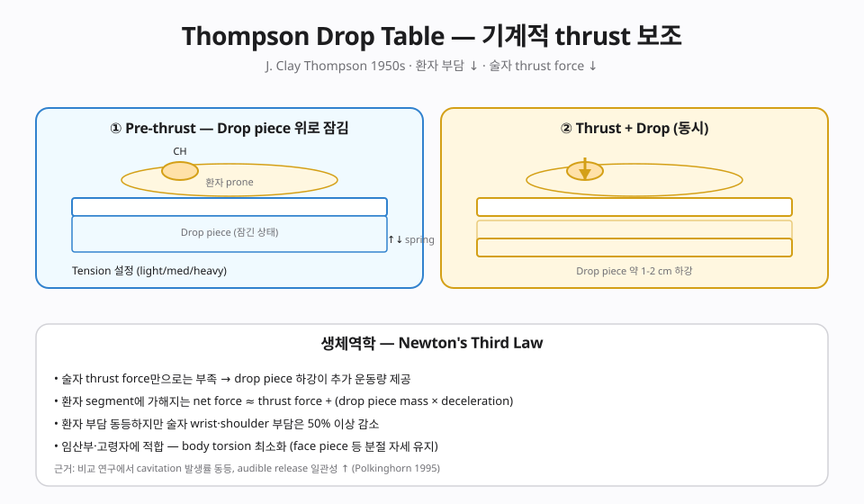
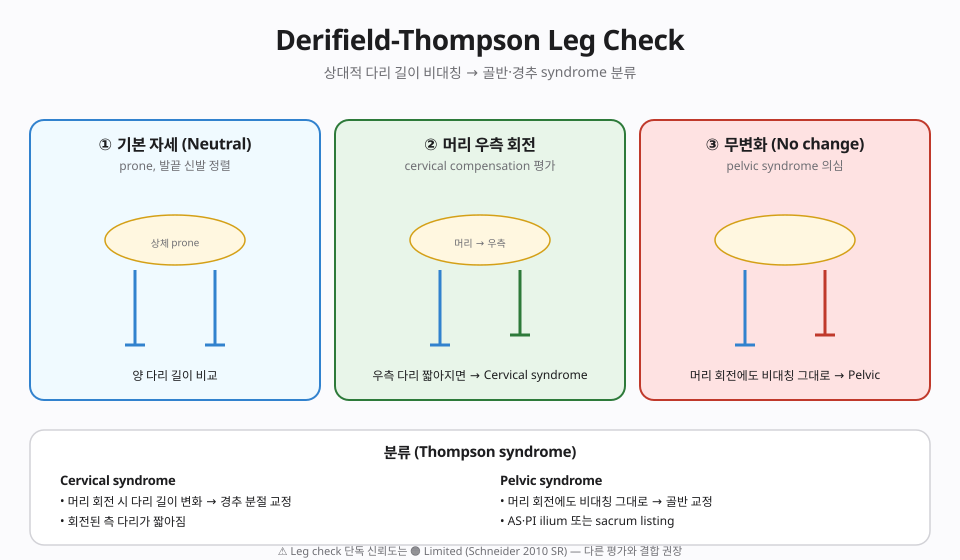

📊 핵심 다이어그램
이 챕터의 핵심 개념을 시각화한 도식.


📘 편집 원칙
근거 기반 의학(EBM) 관점. Vitalism · 전신질환 인과론 · AK 진단 확장 · Cranial rhythm 등 No evidence 주장은 🔴 제외 또는 비판적으로만 언급합니다.
개요
본 챕터가 다루는 기법
Segmental Drop Table의 공압 낙하 보조 추력 + Derifield-Thompson leg check 분석. 최소 힘·고속 추력으로 고령·임산부·HVLA 거부 환자에 적합.
근거 수준 한눈에
근거
🟡 Moderate — 요추·골반 SMT
이론·기전
모든 카이로프랙틱 기법은 Afferentation → 중추 처리 → Efferentation 프레임(Chapter 2 참조)에서 해석합니다. 이 기법이 어떤 구심성 입력을 만들고 어떤 원심 출력을 조절하는지.
[상세 이론 본문 자리] 창시자·역사·생체역학·신경생리 — 추후 확장 예정. Chapter 2 Functional Neurology의 Aff/Def/Eff 프레임으로 이 기법을 재해석.
임상 적용
[임상 프로토콜 본문 자리] 적응증·환자 자세·접촉점·추력 벡터·주의점·안전. 다학제 협진 맥락에서의 위치.
근거 수준
| 적응증 | 근거 수준 | 비고 |
|---|---|---|
| 본 기법 주된 적응증 | 🟡 Moderate — 요추·골반 SMT | 상세는 강의록 MD 참조 |
| 🔴 전신질환·내장·자폐·ADHD·천식·고혈압 치료 | 🔴 No evidence | Cochrane·PubMed 근거 없음 |
🔴 비판적 시각
Leg Check 신뢰도 제한
Derifield-Thompson leg check의 inter-examiner reliability는 🟠 Limited. 훈련 6시간+ 요구. 단독 분석 도구로는 부족 — Motion Palpation·정형학 검사와 병행 권장.
상세 비판 문헌 리뷰와 과장 vs 근거 비교표는 강의록 MD 확장판에서 다룹니다.
강의 자료
11/11 자료 준비 완료.
📖 강의록
🎧 팟캐스트
🎥 AI 동영상
🎴 PPTX 슬라이드 (4개 × 15장)
🎴Part 1 · 기초 ✅ 준비 완료
15장 🎴Part 2 · Aff/Def/Eff ✅ 준비 완료
15장 🎴Part 3 · Assessment ✅ 준비 완료
15장 🎴Part 4 · 임상·비판 ✅ 준비 완료
15장
15장 🎴Part 2 · Aff/Def/Eff ✅ 준비 완료
15장 🎴Part 3 · Assessment ✅ 준비 완료
15장 🎴Part 4 · 임상·비판 ✅ 준비 완료
15장
📄 Report Markdown
📄Report 1/4 ✅ 준비 완료
NotebookLM 자동 생성 📄Report 2/4 ✅ 준비 완료
NotebookLM 자동 생성 📄Report 3/4 ✅ 준비 완료
NotebookLM 자동 생성 📄Report 4/4 ✅ 준비 완료
NotebookLM 자동 생성
NotebookLM 자동 생성 📄Report 2/4 ✅ 준비 완료
NotebookLM 자동 생성 📄Report 3/4 ✅ 준비 완료
NotebookLM 자동 생성 📄Report 4/4 ✅ 준비 완료
NotebookLM 자동 생성
NotebookLM 노트북: 열기 →
🎬 레거시 시연 영상 (사용자 직접 시연)
2015년 KOA 학회 및 임상 시연 당시 사용자가 촬영한 원본 영상입니다. 참고용 · 직접 시연 중심이므로 이론 설명은 챕터 본문을 참고하세요.
Thompson Technique